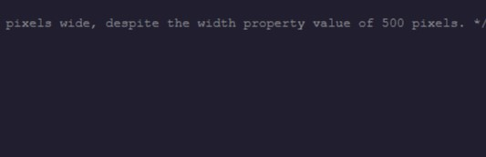
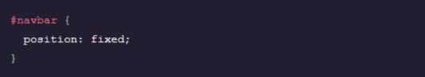

Visual Rules
CSS Declarations
In CSS, a declaration is the key-value pair of a CSS property and its value. CSS declarations are used to set style properties and construct rules to apply to individual or groups of elements. The property name and value are separated by a colon, and the entire declaration must be terminated by a semi-colon.
Font Size
The font-size property is used to set text sizes. Font sizes values can be many different units or types such as pixels.
Background Color
The background-color property controls the background color of elements.
Opacity
The opacity property can be used to control the transparency of an element. The value of this property ranges from 0 (transparent) to 1 (opaque).

Font Weight
The font-weight property can be used to set the thick or thinness, called weight (boldness) of text. The provided value can be a keyword such as bold or normal and even numerical values.
Numerical values can also be used. The numeric scale range of this property is from 100 to 900 and accepts only multiples of 100. The default value is normal while the default numerican value is 400.Any value less than 400 will have text appear lighter than the default while any numerical value greater than the 400 will appear bolder.
Text Align
The text-align property can be used to set the text alignment of inline contents. This property can be set to these values: left, right, or center.
Rule Sets
A rule set contains one or more selectors and one or more declarations. The selector(s), which in this example is h1, points to an HTML element. The declaration(s), which in this example are color: blue and text-align: center style the element with a property and value. The rule set is the main building block of a CSS sheet.
Resource URLs
The url() function is used to wrap resource URLs. These can be applied to several properties such as the background-image.
Background Image
The background-image property sets the background image of an element. An image URL should be provided in the syntax [url("moon.jpg")] as the value of the property.
Font Family
The font-family CSS property is used to specify the typeface in a rule set. Fonts must be available to the browser to display correctly, either on the computer or linked as a web font. If a font value is not available, browsers will display their default font. When using a multi-word font name, it is best practice to wrap them in quotes.Note: See the best practices for using Google Fonts here...
The Box Model
The CSS box model is a box that wrraps around an HTML element and controls the design and layout. The property box-sizing controls which aspect of the box is determined by the height and width properties. The default value of this property is content-box, which renders the actual size of the element including the content box; but not the paddings and borders. The value border-box, on the other hand, render the actual size of an element including the content box, paddings, and borders.

box-sizing: border-box
The value border-box of the box-sizing property for an element corresponds directly to the element's total rendered size, inlcuding padding and border with the height and width properties.
The default value of the box-sizing property is content-box. The value border-box is recommended when it is necessary to resize the padding and border but not just the content. For instance, the value border-box calculates an element's height as follows: height = content + padding + border.
Margin Collapse
Margin Collapse occurs when the top and bottom margin of blocks are combinded into a single margin equal to the largest individual block margin. Margin collapse only occurs with vertical margins, not for horizontal margins.
Auto Keyword
The value auto can be used with the property margin to horizontally center an element within its container. The margin property will take the width of the element and will split the rest of the space equally between the left and right margins.
Dealing with overflow
If content is too large for its container, the overflow property will determine how the browser handles the problem.
By default, it will be set to visible and the content will take up extra space. It can also be set to hidden, or to scroll, which will make overflowing content accessible via scroll bars within the original container.
Height and Width Maximums/Minimums
The min-width and min-height properties can be used to set a minimum width and minimum height of an element's box. CSS max-width and max-height properties can be used to set maximum widths and heights for element boxes.

The visibility Property
The visibilty property is used to render hidden objects invisible to the user, without removing them from the page. This ensures that the page structure and organization remains unchanged.
Display & Positioning
z-index Property
The z-index property specifies how far back or how far forward an element will appear on a web page when it overlaps other elemens.
The z-index property use integar values, which can be positive or negative values. The elements with the highest z-index value will be at the foreground, while the element with the lowest z-index will be at the back.

Fixed Positioning
Positioning in CSS provides designers and developers options for positioning HTML elements on a web page. The CSS position can be set to static, relative, absolute, or fixed. When the CSS position has a value of fixed, it is set/pinned to a specific spot on a page. The fied element stays the same regardless of scrolling. The navigation bar is a great example of an element that is often set to position: fixed;, enabling the user to scroll through the web page and still access the navigation bar.

Absolute Positioning
The value absolute for the property position enables an element to ignore sibling elements and instead be positioned relavtive to its closest parent element that is positioned with relative or absolute. The absolute value removes an element entirely from the document flow. By using the positioning attributes tops, left, bottom, and right, an element can be positioned anywhere as expected.
Relative Positioning
The value relative of the position property enables an element to be positioned relative to where it would have originally been on a web page. The offset properties can be used to determine the actual position of the elements relative to its original position. Without the offset properties, this declaration will hae no effect on its positioning, it will act as the default value static of theposition property.
display Property
The CSS display property determines the type of render block for an element. The most common values for this property are block, inline, and inline-block.
block-level elements take up the full width of thir container with line breaks before and after, and can have their eight and width manually adjusted.
inline elements take up as little space as possible, flow horizontally, and cannot have their width or height manually adjusted.
inline-block elements can appear next to each other, and can have their width and height manually adjusted.
float Property
The float property determines how far left or how far right an element should float within its parent element. The value left floats an element to the left side of its container and the value right floats an element to the right side of its container. For the property float, the width of the container must be specified or the element will assume the full width of its containing element.

Colors
Color Alpha Values
Alpha values determine the transparency of colors in CSS> Alpha values can be set for both RGB and HSL colors by using rgba() and hsla() and providing a fourth value representing alpha. Alpha values can range between 0.0 (totally transparent) and 1.0 (totally opaque).
The transparent value can also be used to create a fully transparent element.
Hexadecimal Colors
CSS colors can be represented in hexadecimal (or hex) notation. Hexadecimal degits can represent sixteen different values using 0 - 9 and a - f.
Hexadecimal colors are composed of 6 characters - each group of two represents a value between 0 and 255 for red, green, or blue. For example #ff0000 is all red, no green, and no blue.
When both characters of all three colors are repeated, hex colors can be abbreviated to only three values, so #0000ff could also be represented as #00f.
HSL Colors
CSS colors can be declared with the HSL color system using hsl() syntax. This syntax contains three values: hue (the color value itself), saturation (intensity), and lightness.
Hue values range from 0 to 360 while saturation and lightness values are represented as percentages.
RGB Colors
CSS colors can be declared with RGB colors using rgb() syntax.
rgb() should be supplied with three values representing red, green, and blue. These values can range from 0 to 255.
Color Name Keywords
Color name keywords can be used to set color: property values for elements in CSS.